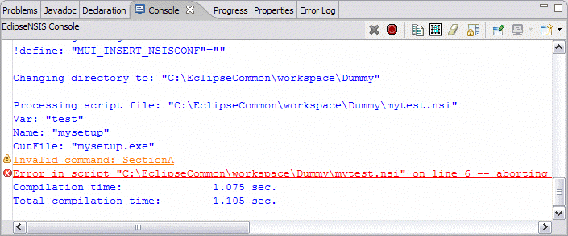

Console
The EclipseNSIS console shows the output of an NSIS script compilation process. The console shows three different kinds of output:
- Information
- Warnings
- Errors
The font and colors for the
console can be customized on the Colors
& Fonts
preferences page.
By default, the console is opened automatically, if it is not already
open, and made visible whenever a script is compiled. This behavior can
also be modified on the EclipseNSIS
preferences page. If errors or
warnings are detected, problem markers are created in the NSIS script
file with information about these problems. These problem markers can
be viewed either in the EclipseNSIS editor or in the standard Eclipse
Problems view.
Errors and warning are also marked as hyperlinks in the
console. Clicking on a hyperlink will take you to the line associated
with the error or warning. If the MakeNSIS compiler does not provide a
line number for the error or warning, the problem marker is assigned to
the first line of the script file.
The console output is implemented using a Table
widget. This means that output text can only be selected (and copied)
in complete lines only- partial line selections are not possible. To
select a line of output, simply click on it. For multiple line
selections, either use the standard Windows Ctrl+Left Mouse
Button (for multiple individual lines) or Shift+Left Mouse
Button (for a range of lines) or click on the first line to select and
drag the cursor onto the other lines to select.
For detailed help about the console, click on the appropriate part of
the console screenshot.

- Output
- The output from the MakeNSIS compilation process.
- Error
- An example error message. Clicking on it will highlight the relevant line in the EclipseNSIS editor.
- Warning
- An example warning message. Clicking on it will highlight the relevant line in the EclipseNSIS editor.
- Cancel Compilation
- Cancels NSIS script compilation. This button is enabled only during compilation.
- Copy
- Copy the selected lines from the console. This button is enabled only when some lines are selected.
- Select All
- Select all the lines in the console.
- Clear
- Clear the console of all output. This button is enabled only when the console contains some output and is disabled during compilation.
Previous | Contents | Next
Copyright © 2004, 2005 Sunil Kamath (IcemanK).